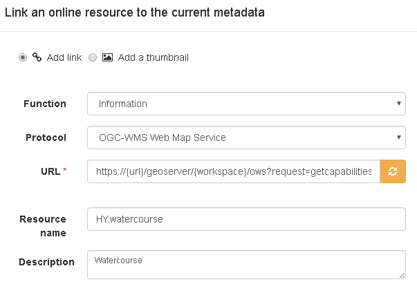

Падручнік па наладжванні службы прагляду INSPIRE з GeoNetwork і Mapserver¶
Гэты падручнік паказвае, як можна наладзіць камбінацыю `MapServer<http://mapserver.org> `_ і GeoNetwork для прадастаўлення паслуг прагляду ў адпаведнасці з `тэхнічнымі інструкцыямі для паслуг прагляду<http://inspire.ec.europa.eu/documents/Network_Services/TechnicalGuidance_ViewServices_v3.1.pdf> `_.
Картсервер¶
How to set up an INSPIRE view service in Mapserver is documented in mapserver documentation. In this tutorial we use the reference service metadata approach:
WEB
METADATA
"wms_inspire_capabilities" "url"
END
END
Геасетка¶
When deploying Geonetwork, make sure the GEMET thesauri are loaded and activate the INSPIRE editor as described in Geonetwork documentation.
У Адміністратар > Налады актывуйце пашырэнне INSPIRE.

For each dataset that you are going to publish create an iso19115 record using the INSPIRE template. Link each record to the view service as created in mapserver: eg https://{url}/cgi-bin/mapserv?map={mapfile}&request=getcapabilities&service=wms&version=1.3.0
Пераканайцеся, што метаданыя ўтрымліваюць той самы gmd:код (і паўнамоцтвы), што і ў WMS getcapabilities.
Стварыце камбайн OGC, які здольны здабываць метаданыя для запісу службы (iso19119) з WMS. Запусціце камбайн і запішыце ідэнтыфікатар створаных метаданых службы.
Вярнуцца да MapServer Mapfile¶
Для кожнай канфігурацыі ўзроўню дадайце URL метададзеных тыпу text/xml. Іншымі адпаведнымі параметрамі з'яўляюцца элемент паўнамоцтваў і ідэнтыфікатар набору даных.
LAYER
NAME "mylayer"
METADATA
wms_dataurl_format "application/vnd.ogc.csw.GetRecordByIdResponse_xml"
wms_dataurl_href "http://geonetwork/srv/api/records/f4f137aa-a2bf-4033-91ef-2cfdbe500690"
wms_authorityurl_name "inspire"
wms_authorityurl_href "http://inspire.ec.europa.eu/"
wms_identifier_authority "inspire"
wms_identifier_value "0a636f43-016c-474a-ab28-1f3d75e9fcae"
END
END
Для вызначэння сэрвісу дадайце спасылку на метададзеныя сэрвісу
WEB
METADATA
"wms_inspire_capabilities" "url"
"wms_languages" "eng"
"wms_inspire_metadataurl_href" "http://geonetwork/srv/api/records/d461302e-5ec8-415d-9a6d-05de37184b03"
"wms_inspire_metadataurl_format" "application/vnd.ogc.csw.GetRecordByIdResponse_xml"
"wms_keywordlist_ISO_items" "infoMapAccessService"
END
END
Праверце рэалізацыю¶
If you are running the above setup online, you can use the pilot JRC INSPIRE validator. If the above setup is running locally, you can use Esdin Test Framework to validate the INSPIRE setup.

Частае выкананне тэсту падчас распрацоўкі дапамагае выявіць праблемы на ранняй стадыі.
Вядомыя праблемы¶
There is a known issue in the capabilities to metadata linkage. The JRC validator requires a gmd:RS_Identifier inside gmd:code having the authority and dataset identifier modeled separately. However the technical guidelines suggest a gmd:MD_Identifier inside gmd:code, the authority can then be included as a prefix, eg <gmd:MD_Identifier>{authority}#{uuid}<gmd:MD_Identifier>